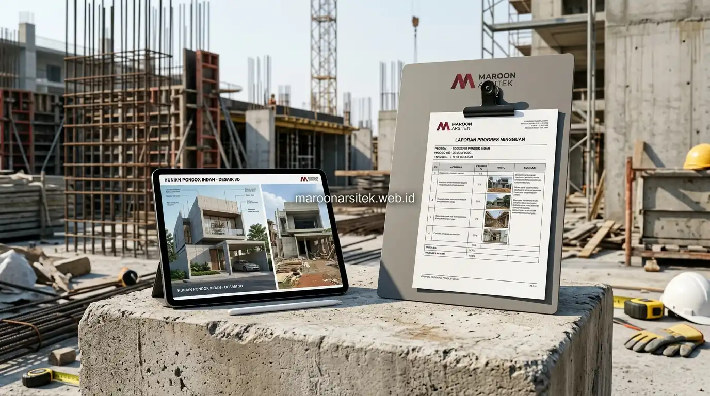

Pembangunan rumah dari nol yang bebas dari risiko mangkrak menerapkan skema pembayaran bertahap sesuai progres fisik, pelaporan rutin yang transparan, serta klausul penalti yang jelas apabila kontraktor melakukan wanprestasi. Maroon Arsitek menerapkan ketiga mekanisme ini secara konsisten melalui layanan jasa kontraktor rumah profesional untuk memberikan kepastian kelangsungan proyek bagi klien dari awal hingga serah terima kunci.
Kekhawatiran proyek ditinggal tukang sering kali dapat dicegah melalui mekanisme kontrak yang mengikat pembayaran dengan progres nyata, bukan pembayaran di muka tanpa jaminan kelanjutan pekerjaan. Bagian berikut menguraikan mekanisme kontraktual yang diterapkan untuk menjawab kekhawatiran tersebut, sesuai dengan standar yang dijalankan tim arsitek dan kontraktor profesional Maroon Arsitek.
Skema Pembayaran Bertahap Sesuai Progres Fisik Pekerjaan
Skema pembayaran bertahap mengikat pencairan dana dengan capaian fisik pekerjaan yang telah diverifikasi, mencegah risiko kontraktor menerima pembayaran besar di muka namun tidak menyelesaikan kewajiban kerja sesuai kesepakatan. Skema ini menjadi mekanisme perlindungan utama bagi klien dalam kontrak kerja pembangunan rumah dari nol.
Setiap tahap pembayaran dikaitkan dengan pencapaian milestone tertentu, seperti penyelesaian struktur pondasi, pengecoran kolom dan balok, pemasangan atap, hingga penyelesaian finishing, yang diverifikasi terlebih dahulu sebelum pencairan dana tahap berikutnya dilakukan kepada kontraktor pelaksana di lapangan.
Persentase pembayaran pada setiap tahap disusun proporsional dengan nilai pekerjaan yang telah diselesaikan, memastikan tidak ada tahap yang dibayar melebihi nilai pekerjaan aktual yang telah dikerjakan di lapangan. Proporsi ini biasanya diatur dalam RAB terperinci yang menjadi lampiran wajib kontrak kerja, sebagaimana yang dapat direncanakan sejak awal melalui dokumen template RAB pembangunan rumah.
Verifikasi Milestone Sebelum Pencairan Dana Tahap Berikutnya
Kebutuhan kepastian kesesuaian pembayaran dengan progres dijawab melalui verifikasi milestone yang dilakukan sebelum pencairan dana tahap berikutnya, memastikan pekerjaan yang diklaim selesai benar-benar sesuai dengan kondisi aktual di lapangan. Verifikasi ini dapat melibatkan pengawas lapangan independen atau tim pengawas dari pihak kontraktor yang transparan dalam pelaporan kondisi aktual.
Verifikasi ini menjadi kontrol penting yang mencegah pencairan dana untuk pekerjaan yang belum sepenuhnya selesai, sekaligus memberikan insentif bagi kontraktor untuk menyelesaikan setiap tahap sesuai standar sebelum mengajukan pembayaran berikutnya kepada klien yang berwenang untuk menyetujui atau menunda pencairan.
Mekanisme Pelaporan Rutin yang Mencegah Proyek Tak Terpantau
Mekanisme pelaporan rutin memastikan klien selalu mendapat informasi terkini mengenai perkembangan proyek, mencakup capaian fisik, kendala yang dihadapi, dan rencana kerja pada periode berikutnya, sehingga proyek tidak pernah berjalan tanpa pengawasan yang memadai. Pelaporan ini menjadi jaminan transparansi sepanjang masa konstruksi berlangsung dan memudahkan koordinasi antara klien dan kontraktor.
Laporan disampaikan dalam interval waktu yang telah disepakati, dilengkapi dokumentasi visual yang menunjukkan kondisi aktual proyek, memberikan bukti konkret atas klaim progres yang disampaikan kepada klien. Frekuensi pelaporan yang umum adalah mingguan untuk proyek skala rumah tinggal, dengan laporan bulanan yang lebih komprehensif sebagai rekap perkembangan keseluruhan.
Sistem pelaporan yang konsisten juga memudahkan deteksi dini apabila terjadi perlambatan progres, memungkinkan klien dan kontraktor mendiskusikan solusi sebelum keterlambatan berdampak signifikan terhadap keseluruhan jadwal proyek, sebagaimana diterapkan dalam setiap proyek di portofolio Maroon Arsitek.

Dokumentasi Visual sebagai Bukti Konkret Progres Proyek
Kebutuhan bukti nyata atas klaim progres dijawab melalui dokumentasi visual yang disertakan dalam setiap laporan rutin, memberikan gambaran konkret mengenai kondisi aktual proyek tanpa hanya mengandalkan deskripsi tertulis semata. Foto dan video kondisi lapangan menjadi standar pelaporan yang tidak dapat dimanipulasi seperti halnya deskripsi verbal.
Dokumentasi ini menjadi arsip yang berguna bagi klien untuk melihat perkembangan proyek dari waktu ke waktu, sekaligus menjadi bahan verifikasi apabila terjadi perbedaan pendapat mengenai capaian pekerjaan pada periode tertentu. Arsip dokumentasi ini juga berguna untuk keperluan klaim garansi apabila ditemukan masalah pascaserah terima di kemudian hari.
Klausul Penalti dan Penanganan Wanprestasi dalam Kontrak
Klausul penalti dicantumkan dalam kontrak kerja untuk memberikan konsekuensi tegas apabila kontraktor tidak memenuhi kewajiban sesuai kesepakatan, termasuk mekanisme penanganan apabila terjadi wanprestasi yang mengancam kelangsungan proyek. Klausul ini menjadi perlindungan hukum tambahan bagi klien selain skema pembayaran bertahap yang sudah ada dalam struktur kontrak.
Penalti keterlambatan dihitung berdasarkan periode waktu yang terlewat dari jadwal yang disepakati, memberikan insentif bagi kontraktor untuk menyelesaikan pekerjaan tepat waktu sesuai komitmen yang telah dituangkan dalam kontrak kerja. Nilai penalti biasanya ditetapkan sebagai persentase dari nilai kontrak per hari keterlambatan, sehingga proporsional dengan dampak keterlambatan terhadap klien.
Mekanisme penanganan wanprestasi turut mencantumkan opsi pemutusan kontrak dan penyelesaian pekerjaan oleh pihak lain, memberikan klien jalan keluar yang jelas apabila kontraktor benar-benar tidak dapat melanjutkan kewajibannya. Hal ini menjadi dasar penyelesaian yang tertib tanpa harus melalui proses persengketaan yang panjang dan menguras energi semua pihak yang terlibat dalam proyek pembangunan rumah.
Opsi Pemutusan Kontrak Apabila Wanprestasi Berlanjut
Kebutuhan jalan keluar yang jelas dijawab melalui opsi pemutusan kontrak yang dicantumkan sejak awal, memberikan klien dasar hukum untuk mengambil langkah lanjutan apabila kontraktor terbukti tidak dapat memenuhi kewajiban meski telah diberikan peringatan sesuai prosedur yang disepakati bersama dalam kontrak kerja.
Opsi ini menjadi perlindungan terakhir bagi klien, memastikan proyek tetap dapat dilanjutkan oleh pihak lain tanpa terjebak dalam situasi mangkrak akibat kontraktor yang tidak lagi menjalankan kewajibannya sesuai kontrak. Dengan mekanisme yang lengkap ini, klien dapat membangun rumah dengan tenang dan terproteksi sejak awal hingga akhir, sebagaimana standar yang diterapkan oleh kontraktor rumah terpercaya di Jabodetabek.